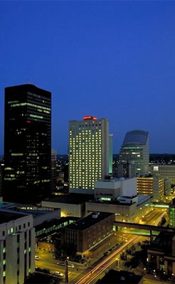

|
| Home · Church · Reception · Registry · Photos · Contact |
|  |
Our reception will be held at the Marriott of downtown Des Moines.
Des Moines Marriott Downtown
700 Grand Avenue
Des Moines, Iowa 50309
marriott.com/property/propertypage/DSMIA
Accomodations:
Complimentary champagne and refreshments will be available at the Marriott prior to the reception which starts at 7:00 PM. An open bar will be available from 8:00 - 12:00.
Since Kari and I couldn't decide on a meal, we each picked an entree; you'll be served three pepper crusted pork tenderloin with kaluha and shallot cream along with pecan encrusted chicken with Maytag bourbon onion sauce. This will also include:
Iowa Butternut Bisque cooked with tomatoes, creamed with celery, onion, and garlic topped with sour cream and sauteed leeks
Mixed field greens with herbed chevre croutons and a balsamic Vinaigrette
Chef's vegetable medley, and red potatoes
Dessert will include vanilla bean ice cream and, of course, wedding cake.
Entertainment will be presented by the Freestyle Variety Band.
Room Reservations:
For online reservations follow this link and select October 22, 2005. You should be automatically redirected to rooms with our special rate. If you are asked for a code at any time use: RBWRBWA.
To make reservations by phone call 1-800-514-4681 and use the code RBWS for our special rate.
Directions:
The easiest way to get to the reception from the church will be via I-235, which is currently being completely re-routed. Thus we've given a couple options for travel. The city has put together a construction web site that may help you pick your route: www.i235.com.
Printer friendly directions from church - Recommended
Printer friendly directions from church - Alternate
|
|
| |
|